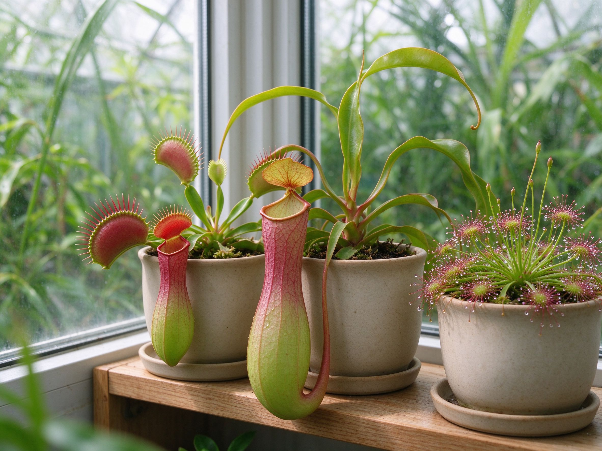

Growing Carnivorous Plants at Home: Venus Flytraps, Pitcher Plants & More
Carnivorous plants look exotic, but they're not hard — they just follow different rules than every other houseplant. Get four things right — water, light, soil, and winter rest — and a Venus flytrap or pitcher plant will thrive on a bright windowsill for years.
Which Carnivorous Plant Should You Start With?
Three plants are beginner-friendly and easy to find online or at garden centers:
- Venus flytrap (Dionaea muscipula) — the classic. Needs a cool winter dormancy, so it suits cooler rooms and greenhouses.
- Sundew (Drosera) — the easiest of all. Glittering sticky leaves that catch fungus gnats; forgiving of indoor conditions.
- Pitcher plant (Sarracenia) — hardy, dramatic, and winter-dormant. Great for a sunny, unheated porch or conservatory.
If you're short on light or want a tropical option that skips dormancy, a tropical Nepenthes hanging pitcher plant is a strong choice for a warm, humid bathroom.
The 4 Rules That Matter Most
1. Water with rain or distilled water only
This is the rule beginners break most. Carnivorous plants grow in mineral-poor bogs, so tap water's dissolved minerals slowly poison them. Use rain water, distilled water, or reverse-osmosis water. Keep the tray method going: set the pot in a shallow tray with an inch of water and keep it topped up. Most carnivorous plants want their feet wet all season.
2. Give them full sun — indoors or out
Bright light is what makes traps and pitchers turn red and catch insects. Give temperate species as much direct sun as possible: a south-facing windowsill, or outdoors in full sun during the growing season. Indoors under a grow light works well in winter.
3. Plant in nutrient-free soil
Never use regular potting mix. The standard recipe is a 50/50 mix of sphagnum peat moss and perlite, or pure sphagnum moss for tropical species. No fertilizer, no compost — these plants get their nutrients from insects, not soil. For more on building the right growing medium, see our guide to soil — then ignore it for these guys.
4. Respect dormancy for temperate species
Venus flytraps and Sarracenia need a cold rest of 8-12 weeks in winter, around 2-10°C (35-50°F). An unheated garage, cool basement, or sheltered porch works. Leaves may die back — that's normal. Growth resumes in spring. Tropical species like Nepenthes skip this entirely and just want warmth and humidity year-round.
Should You Feed Them?
Outdoors, they catch their own food. Indoors, one small insect every few weeks is plenty — a fly, a cricket, or a freeze-dried bloodworm from a pet store. Only trigger a Venus flytrap's trap two or three times a season; snapping wastes energy. Never feed them hamburger or other meat — it rots and kills the trap.
Common Problems, Solved
- Blackening traps or leaves — usually old age (normal) or tap-water burn (switch to rain/distilled).
- No red color — not enough light. Move to a brighter spot or add a grow light.
- Mold or rot — too much humidity with no airflow. Improve ventilation; keep tropical species airy.
- Fungus gnats — actually a food source for sundews! Let them work.
Repotting and Propagating
Repot every 2-3 years in spring into fresh peat-perlite mix. Venus flytraps and sundews are easy to divide: gently separate the crowns with roots attached and pot them up. Pitcher plants grow from rhizomes that split the same way. It's the fastest way to grow a windowsill collection for free.
If you're also growing herbs indoors, keep carnivorous plants in a separate tray — their soil stays wet, while herbs like our indoor herb guide prefer to dry between waterings. Different rules, different corner of the windowsill.